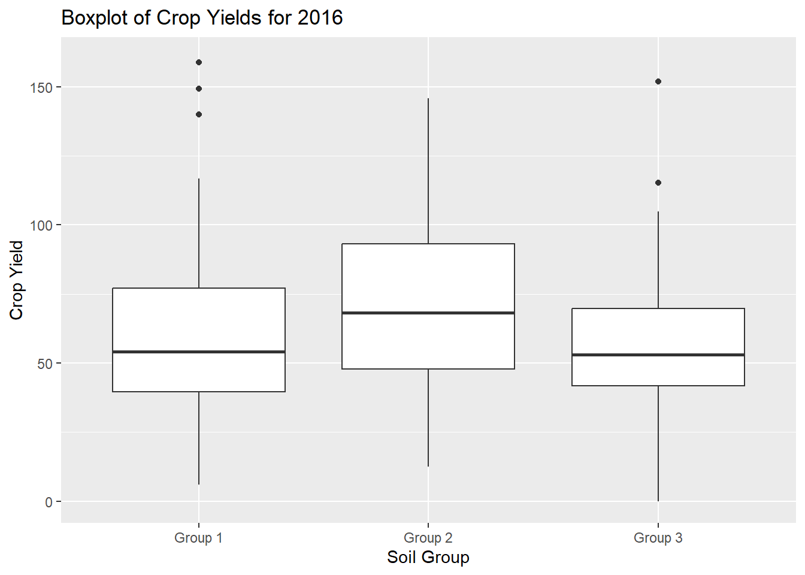
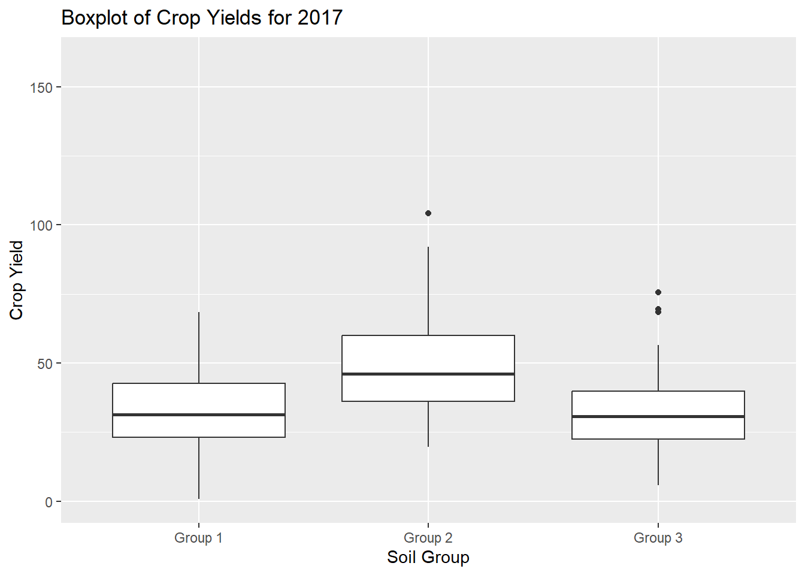
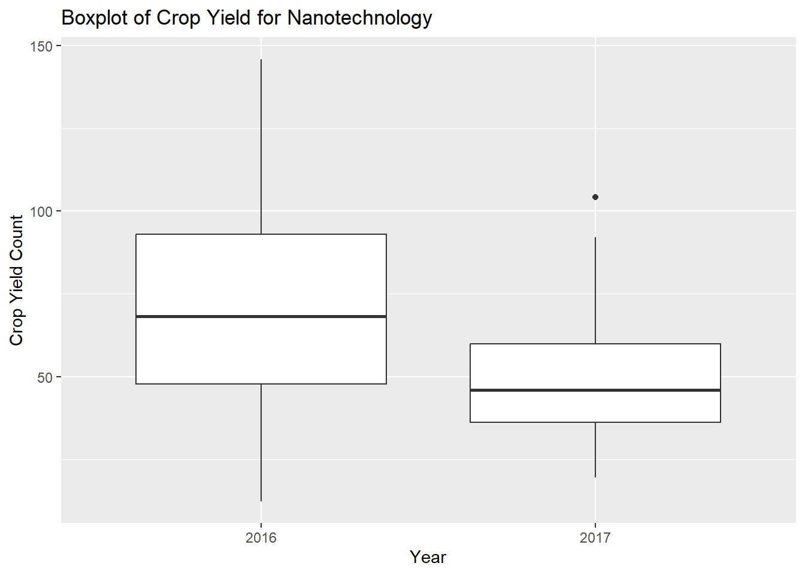

This report aimed to establish whether a new nanotechnology was successful in increasing the yield of soya beans by attracting more nitrogen-fixing bacteria to soil, and if so whether it was more effective than an existing biological nitrogen fixing (BNF) inoculant.
To answer these questions, we were provided with data from trials which took place across 2 years (2016-2017) on 60 plots of land with three different soil groups:
Group 1: A control group containing 20 plots with no nanotechnology or BNF treatment.
Group 2: 20 plots with the nanotechnology applied once in 2016.
Group 3: 20 plots with bacterial inoculant applied.
The plots were randomised once, and the nanotechnology was only applied once. This was to establish whether the nanotechnology was more effective in the second year than the first. An issue with the data received, was that it was not stated whether the BNF inoculant was applied only once, or whether it was applied in 2017 as well.
The success of each land plot within each group was measured by the yield count per plot of land. R Studio version 4.4.1 was used to analyse the data, perform calculations and generate graphs. The yield increase from 2016 to 2017 was calculated by subtracting each yield count in 2017 from that of the corresponding land plot in 2016. An analysis of variance (ANOVA) was performed on the data and the p-values were compared to an alpha-value of 0.05 to determine whether the changes in yield for the nanotechnology were significantly different enough to the other groups.
This showed a significant difference in the yield means between the groups in 2016 (p = 0.0015) and in 2017 (p = 6.3-14). Post-hoc tests further showed that the group which was statistically different, when compared to the others, was the nanotechnology. In 2016, when compared to the biological inoculant (p = 0.0016) and with the control (p = 0.0232). In 2017, p < 0.0001 for both comparisons. However, the data showed a decrease in yield in all groups from 2016 to 2017 as opposed to the predicted increase for nanotechnology. The ANOVA did not find this to be statistically significant (p = 0.416) so this was inconclusive.
Background
Context
Over the past 100 years, intensive farming has depleted the soil of many nutrients required by crops to grow successfully (Barman, Das and Bhattacharya,2019). Nitrogen is essential for all plants to build the proteins they need to grow and in an agricultural setting, to produce higher yields (Bhatti, Haq and Bhat, 2017). However, it needs to be converted into nitrates, a form which the plants can absorb . Rhizobia are bacteria in the soil that carry out a process of biological nitrogen-fixing (BNF) which converts atmospheric nitrogen into nitrates. Such bacteria form symbiotic relationships with plants in the legume family which includes soya beans, by attaching themselves to the roots of the plants and creating nodules (López-Guerrero et al., 2012). They then receive carbon from the plant in exchange for the newly fixed nitrogen they provide it.
In an agricultural setting, there are soil treatments known as BNF inoculants that are used to increase crop yields (Kaur et al., 2023).
The new treatment being tested is a nanotechnology. It was designed to encourage the expression of certain genes in rhizobia which would increase their sensitivity to specific exudates released by the soya beans (Kaur et al., 2023). If successful, more of the nitrogen-fixing microorganisms would carry out the BNF process at an earlier stage of crop growth, therefore increasing the availability of nitrogen for the soya bean plants to absorb from an early stage of growth (Kaur et al., 2023). By increasing the yield of the crop, more exudates should be released into the soil, encouraging the same gene expression in the bacteria in subsequent harvests. Therefore, only one application of the nanotechnology would be needed to secure higher yields for subsequent years.
Data Collection
Soya beans were planted in 60 plots of land. To determine whether the nanotechnology worked, it was important to compare its effect with that of a regular BNF inoculant, and to include a control group which did not contain any form of soil treatment. Therefore, Group 1 of 20 plots contained the nanotechnology, Group 2 of 20 plots had BNF inoculant and Group 3 consisted of the final 20 which were untreated. The plots were randomised in 2016 to avoid bias. Results were taken 5 times each year, measured by the total yield per plot. This led to a total of 100 readings per soil type per year.
Hypotheses
There were three hypotheses (A, B and C) to answer three research questions.
Null Hypothesis A (H0 A): All soil groups produce a similar mean yield in both years.
Alternative Hypothesis A (H1 A) The mean yield will be significantly higher in Group 1 than in other groups in both testing years.
Null Hypothesis B (H0 B): The mean yield for Group 1 will be the same in both years.
Alternative Hypothesis B (H1 B): The mean yield for Group 1 will be significantly higher in 2017.
Null Hypothesis C (H0): The mean yield will be similar in Group 2 and 3.
Alternative Hypothesis C (H1): The mean yield in the Group 2 will be significantly higher than that of Group 3.
Materials and Methods
Materials
The data was collected by the biotechnology company. The analysis took place on R Studio and used the tidyverse, dplyr and emmeans packages. The ggplot2 package was also used to create visualisations for the results.
Methods
First, the mean yield was calculated for each soil group per year with the following code:
#### HEADER ###### Who: Maria Wilson## What: R Mini Project## When: 2024-10-11## CONTENTS ###### 00 Setup## 1.0 Exploratory Data Analysis## 2.0 Hypothesis A## 3.0 Hypothesis B## 4.0 Graphs## 00 Setup ##### Set working directorysetwd("~/GitHub/C7091-Assessment-2")# Load librarieslibrary(tidyverse)
── Attaching core tidyverse packages ──────────────────────── tidyverse 2.0.0 ──
✔ dplyr 1.1.4 ✔ readr 2.1.5
✔ forcats 1.0.0 ✔ stringr 1.5.1
✔ ggplot2 3.5.1 ✔ tibble 3.2.1
✔ lubridate 1.9.3 ✔ tidyr 1.3.1
✔ purrr 1.0.2
── Conflicts ────────────────────────────────────────── tidyverse_conflicts() ──
✖ dplyr::filter() masks stats::filter()
✖ dplyr::lag() masks stats::lag()
ℹ Use the conflicted package (<http://conflicted.r-lib.org/>) to force all conflicts to become errors
library(dplyr)library(emmeans)
Welcome to emmeans.
Caution: You lose important information if you filter this package's results.
See '? untidy'
# Load dataraw_data <-read.csv('data.csv')## 1.0 Exploratory Data Analysis ###### 1.1 Mean yield for each soil# Separate each soil variable.nanotechnology <- raw_data %>%# select data object: project_datafilter(soil =='nanotechnology') # filter for nanotechnologybnf <- raw_data %>%# select data object: project_datafilter(soil =='bacterial_inoculant') # filter for bacterial inoculantcontrol <- raw_data %>%# select data object: project_datafilter(soil =='control') # filter for control# Calculate the mean Yield for each soil group over the full 2 years.mean(control$Yield) # Mean yield of control group
[1] 45.55692
# 45.56mean(nanotechnology$Yield) # Mean yield of nanotechnology group
[1] 59.24256
# 59.24mean(bnf$Yield) # Mean yield of bnf group
[1] NA
# NAsummary(bnf) # There is one NA value in the data for bnf yield
yr soil rep Yield
Min. :2016 Length:200 Min. :1 Min. : 0.00
1st Qu.:2016 Class :character 1st Qu.:2 1st Qu.: 28.47
Median :2016 Mode :character Median :3 Median : 41.04
Mean :2016 Mean :3 Mean : 44.46
3rd Qu.:2017 3rd Qu.:4 3rd Qu.: 55.99
Max. :2017 Max. :5 Max. :151.98
NA's :1
mean(na.omit(bnf$Yield)) # Mean yield of bnf group, omitting the NA value.
[1] 44.46223
# 44.46# The mean yield for nanotechnology is higher than the other groups. However, this is very vague. Next step is to calculate the mean for each group, for each year.## 1.2 Mean yield for each soil group for per yearnano_2016 <- nanotechnology %>%# Select data object: nanotechnologyfilter(yr ==2016) # Filter by year 2016nano_2017 <- nanotechnology %>%# Select data object: nanotechnologyfilter(yr ==2017) # Filter by year 2017bnf_2016 <- bnf %>%# Select data object: bnffilter(yr ==2016) # Filter by year 2016bnf_2017 <- bnf %>%# Select data object: bnffilter(yr ==2017) # Filter by year 2017control_2016 <- control %>%# Select data object: controlfilter(yr ==2016) # Filter by year 2016control_2017 <- control %>%# Select data object: controlfilter(yr ==2017) # Filter by year 2017# Caluclate 2016 yield meansmean(control_2016$Yield) # Mean yield for control group in 2016
[1] 59.54646
# 59. 55mean(nano_2016$Yield) # Mean yield for nanotechnology in 2016
[1] 70.29243
# 70. 29mean(bnf_2016$Yield) # Mean yield for bnf in 2016
[1] NA
# NAmean(na.omit(bnf_2016$Yield)) # Mean yield for bnf in 2016, omitting the NA value
[1] 56.07237
# 56.07# Calculate 2017 yield meansmean(control_2017$Yield) # Mean yield for control group in 2017
[1] 31.56738
# 31.57mean(nano_2017$Yield) # Mean yield for nanotechnology group in 2017
[1] 48.19268
# 48.19mean(bnf_2017$Yield) # Mean yield for bnf in 2017
[1] 32.9682
# 32.97# The mean yield for the nanotechnology was higher than the other two groups, in both 2016 and 2017.# In 2016 it was 70.29, compared to 59.55 for the control group, and 56.07 for the bnf inoculant.# It was surprising that the bnf inoculant produced a lower mean yield than the untreated group.# In 2017, the nanotechnology mean yield was 48.19.# This was higher than 31.57 for the control group, and 32.97 for the bnf group.# This time, the bnf inoculand produced a slightly higher yield than the control group.
The following table shows the results for 2016 in descending order:
Soil Group
Mean Yield in 2016
Group 2 (Nanotechnology
70.29
Group 1 (Control)
59.55
Group 3 (Biological Inoculant
56.07
It is worth noting that there was a missing value in the BNF data, but the sample size was still large enough to continue with the calculation. There were two stand out features of the means. The first was that the Group 2 did produce the highest mean yield. The second was that Group 1 had a slightly higher yield than Group 3, which was unexpected.
The means for 2017 in descending order:
Soil Group
Mean Yield in 2017
Group 2 (Nanotechnology)
48.19
Group 3 (Biological Inoculant)
32.97
Group 1 (Control)
31.57
Once again, the nanotechnology produced the highest mean yield. This time, Group 3 was marginally higher than Group 1.
The next step in analysing the data was to determine whether the differences in means between each group were statistically significant enough to accept any of the alternative hypotheses. To do this, an analysis of variance (ANOVA) was conducted. Firstly, the following assumptions were made on the data:
We assumed the sample size was large enough for a Gaussian distribution to exist in the data within each group. Secondly, we assumed homoscedasticity in the data, meaning that the variance in yield was similar in all 3 groups. Thirdly, we assumed the observations were independent.
The p-value calculated from the ANOVAs were compared to the alpha-value of 0.05 when deciding to accept or reject the null hypothesis. If P < 0.05, the results were considered to be statistically significant enough to reject the null hypothesis and accept the alternative.
## 2.0 Hypothesis A ##### 2.1 ANOVA # To determine whether the differences in mean outlined above were statistically significant, an ANOVA was performed.data_2016 <- raw_data %>%# Create new object and select original dataframefilter(yr ==2016) # Filter by year 2016anova_16 <-aov(Yield ~ soil, data = data_2016) # Run anova on data in 2016data_2017 <- raw_data %>%# Create object and select original datafilter(yr ==2017) # Filter by year 2017anova_17 <-aov(Yield ~ soil, data = data_2017) # Run anova n data in 2017summary(anova_16) # Summary of anova results.
Df Sum Sq Mean Sq F value Pr(>F)
soil 2 10957 5478 6.65 0.0015 **
Residuals 296 243848 824
---
Signif. codes: 0 '***' 0.001 '**' 0.01 '*' 0.05 '.' 0.1 ' ' 1
1 observation deleted due to missingness
# F value is 6.65# P value is 0.0015# P value < 0.05. Can reject null hypothesissummary(anova_17) # Summary of anova results
Df Sum Sq Mean Sq F value Pr(>F)
soil 2 17005 8502 33.73 6.3e-14 ***
Residuals 297 74866 252
---
Signif. codes: 0 '***' 0.001 '**' 0.01 '*' 0.05 '.' 0.1 ' ' 1
# F value is 33.73# P value is 6.3e-14# P value < 0.05. Reject null hypothesis, accept alternative hypothesis## 2.2 Post-hocposthoc_16 <-emmeans(anova_16, pairwise ~ soil)summary(posthoc_16)
$emmeans
soil emmean SE df lower.CL upper.CL
bacterial_inoculant 56.1 2.88 296 50.4 61.7
control 59.5 2.87 296 53.9 65.2
nanotechnology 70.3 2.87 296 64.6 75.9
Confidence level used: 0.95
$contrasts
contrast estimate SE df t.ratio p.value
bacterial_inoculant - control -3.47 4.07 296 -0.854 0.6699
bacterial_inoculant - nanotechnology -14.22 4.07 296 -3.494 0.0016
control - nanotechnology -10.75 4.06 296 -2.647 0.0232
P value adjustment: tukey method for comparing a family of 3 estimates
For Hypotheis B, The mutate() function, from the dplyr R package was used to create a new variable to perform the analysis on. The variable was named ‘Yield Increase’, and was calculated by subtracting each yield count for 2017 from its corresponding reading for the same plot in 2016. The calculations were done using the following code:
## 3.0 HYPOTHESIS B ####years_data <-data.frame(data_2016, data_2017) # combine data for each yearyears_data <- years_data %>%rename(Yield_2016 = Yield, # Rename Yield to Yield 2016Yield_2017 = Yield.1) # Rename Yield.1 to Yield 2017yield_increase <- years_data %>%mutate(yield_increase = Yield_2017 - Yield_2016) # create new column with increase in yieldyield_increase <- yield_increase %>%select(soil, yield_increase) # select the columns needednano_inc <- yield_increase %>%select(soil, yield_increase) %>%filter(soil =='nanotechnology')control_inc <- yield_increase %>%select(soil, yield_increase) %>%filter(soil =='control')bnf_inc <- yield_increase %>%select(soil, yield_increase) %>%filter(soil =='bacterial_inoculant')summary(nano_inc) # Show summary statistics
soil yield_increase
Length:100 Min. :-109.211
Class :character 1st Qu.: -47.045
Mode :character Median : -23.656
Mean : -22.100
3rd Qu.: 3.052
Max. : 60.727
# The summary shows that the mean increase in yield from 2016 to 2017, for the nanotechnology is a negative number.# This means that the mean yield actually decreased.yield_increase_all <-data.frame(control_inc$yield_increase, nano_inc$yield_increase, bnf_inc$yield_increase)# Run anova on yield increaseinc_anova <-aov(yield_increase ~ soil, data = yield_increase)summary(inc_anova)
Df Sum Sq Mean Sq F value Pr(>F)
soil 2 1959 979.5 0.879 0.416
Residuals 296 329683 1113.8
1 observation deleted due to missingness
# F value = 0.879# P value = 0.416# P value > 0.05, accept null hypothesis.## 3.2 Post-hocposthoc_b <-emmeans(inc_anova, pairwise ~ soil)summary(posthoc_b)
$emmeans
soil emmean SE df lower.CL upper.CL
bacterial_inoculant -23.2 3.35 296 -29.8 -16.6
control -28.0 3.34 296 -34.5 -21.4
nanotechnology -22.1 3.34 296 -28.7 -15.5
Confidence level used: 0.95
$contrasts
contrast estimate SE df t.ratio p.value
bacterial_inoculant - control 4.81 4.73 296 1.016 0.5675
bacterial_inoculant - nanotechnology -1.07 4.73 296 -0.227 0.9721
control - nanotechnology -5.88 4.72 296 -1.246 0.4273
P value adjustment: tukey method for comparing a family of 3 estimates
Results and Discussion
Hypothesis A
There was a significant difference in the mean crop yield between at least some soil types in 2016 (F(2, 296) = [6.65], p = 0.0015) and in 2017 (F(2, 297) = [33.73], p = 6.3e-14). In both cases p < 0.05.
The emmeans() package was used to perform a post hoc test (Tukey’s HSD test) which confirmed that it was Group 1 (nanotechnology) which had a significantly higher mean yield than both of the other groups. The resulting p Values are below, with nanotechnology in bold.
For 2016:
Group 3, Group 1 or bacterial inoculant, control (p = 0.6699)
Group 3, Group 2 or bacterial inoculant, nanotechnolog (p = 0.0016)
Group 1, Group 2 or control vs nanotechnology ( p = 0.0232)
This showed that the plots with nanotechnology had a significantly higher mean yield than the other plots.
2017:
Group 3, Group 1 or bacterial inoculant, control (p = 0.8071)
Group 3, Group 2 or bacterial inoculant, nanotechnology (p < 0.0001)
Group 1, Group 2, control, nanotechnology (p < 0.0001)
It should be noted that there were some outliers in the data. In 2016, these were for the control group and the bacterial inoculant group. However, due to them being outliers above their respective means, it would not have affected the hypothesis. p < 0.05 consistently for the nanotechnology, therefore we can reject H0 and accept H1. The nanotechnology achieved a higher mean yield than the bacterial inoculant and the control group, in 2016 and 2017.
Fig 1: Boxplot showing the crop yield in the plots in 2016 for each soil group. Group 1 = Control Group, Group 2 = Nanotechnology, Group 3 = bacterial inoculant.
Fig 2: Boxplot showing the crop yield in the plots in 2017 for each soil group. Group 1 = Control Group, Group 2 = Nanotechnology, Group 3 = bacterial inoculant.
Hypothesis B
There was no significant difference found between the mean yield increase between any of the groups (F(2, 296) = 0.879, p = 0.416).
We accepted the H0 and rejected H1. This means that any increase/decrease in mean yield from 2016 to 2017 was similar in all groups. The nanotechnology did not produce a significantly higher crop yield in 2017 than in 2016, nor was the decrease significant.
Fig 3: Boxplot showing the difference in nanotechnology yield in 2016 and 2017.
Hypothesis C
These results, taken from the post-hoc test carried out for Hypothesis A were applicable.
2016:
Group 3, Group 1 or bacterial inoculant vs control (p = 0.6699)
2017:
Group 3, Group 1 bacterial inoculant vs control (p = 0.8071)
In both years p > 0.05 we accepted the null hypothesis H0 and rejected the alternative hypothesis H1.
All graphs were created using the ggplot2 R package, with the following code:
library(ggplot2)data_2016$soil <-as.factor(data_2016$soil) # Convert soil to factorlevels(data_2016$soil) <-c('Group 3', 'Group 1', 'Group 2') # Rename thelevels for soil groupsdata_2016$soil <-factor(data_2016$soil, levels =c('Group 1','Group 2', 'Group 3'), ordered =TRUE) # Order the soil groups to correspond with reportplot_16 <-ggplot(data = data_2016, aes(x = soil, y = Yield)) +# Create ggplot and select 2016 datageom_boxplot() +# Add boxplot layerlabs(title ='Boxplot of Crop Yields for 2016', x ='Soil Group') +# Add title and x-axis labelscale_y_continuous(name ='Crop Yield', limits =c(0, 160)) # Set y axis-label and appropriate scale.print(plot_16)
Warning: Removed 1 row containing non-finite outside the scale range
(`stat_boxplot()`).

# 2017:data_2017$soil <-as.factor(data_2017$soil) # Convert soil to factorlevels(data_2017$soil) <-c('Group 3', 'Group 1', 'Group 2') # Rename levels for soil groupsdata_2017$soil <-factor(data_2017$soil, levels =c('Group 1', 'Group 2', 'Group 3'), ordered =TRUE) # Order the soil groups to correspond with reportplot_17 <-ggplot(data = data_2017, aes(x = soil, y = Yield)) +# Create ggplot and select 2017 datageom_boxplot() +# Add boxplot layerlabs(title ='Boxplot of Crop Yields for 2017', x ='Soil Group') +# Add title and x-axis labelscale_y_continuous(name ='Crop Yield', limits =c(0, 160)) # Set y-axis label and scale (same scale as 2016, for easy comparison when looking at the graphs)print(plot_17)

nanotechnology$yr <-as.factor(nanotechnology$yr) # Convert year to factorclass(nanotechnology$yr)
[1] "factor"
ggplot(data = nanotechnology, aes(x = yr, y = Yield)) +# Create ggplot and select nanotechnology datageom_boxplot() +# Add boxplot layerlabs(title ='Boxplot of Crop Yield for Nanotechnology', # Add titles and axis lablesx ='Year',y ='Crop Yield Count')

Conclusions
The results of the ANOVAs showed that the mean yield for the nanotechnology crops was significantly higher than that of the bacterial inoculant and the control group, in both years. Therefore, we can conclude that the nanotechnology was successful at this early stage.
However, the results showed that the selected biological inoculant did not perform better than the control group. Additoinally, the results for Hypothesis B were inconclusive. The yield decreased for all 3 groups being tested which could have been due to factors outside of the data (e.g. temperature, rainfall, disease etc). It is our suggestion that the tests are repeated, and for longer than 2 years.
Bibliography
Wickham H, Averick M, Bryan J, Chang W, McGowan LD, François R, Grolemund G, Hayes A, Henry L, Hester J, Kuhn M, Pedersen TL, Miller E, Bache SM, Müller K, Ooms J, Robinson D, Seidel DP, Spinu V, Takahashi K, Vaughan D, Wilke C, Woo K, Yutani H (2019). “Welcome to the tidyverse.” Journal of Open Source Software, 4(43), 1686. doi:10.21105/joss.01686 https://doi.org/10.21105/joss.01686.
Wickham H, François R, Henry L, Müller K, Vaughan D (2023). dplyr: A Grammar of Data Manipulation. R package version 1.1.4, https://CRAN.R-project.org/package=dplyr.
H. Wickham. ggplot2: Elegant Graphics for Data Analysis. Springer-Verlag New York, 2016.
Barman, S., Das, S. and Bhattacharya, S.S. (2019) ‘Chapter 17 - The Prospects of Bio-Fertilizer Technology for Productive and Sustainable Agricultural Growth’, in Singh, J.S. and Singh, D.P. (eds.) New and Future Developments in Microbial Biotechnology and Bioengineering Elsevier, pp. 233–253.
Bhatti, A.A., Haq, S. and Bhat, R.A. (2017) ‘Actinomycetes benefaction role in soil and plant health’, Microbial pathogenesis, 111, pp. 458–467 Available at: https://doi.org/10.1016/j.micpath.2017.09.036.
Kaur, H., Hussain, S.J., Mir, R.A., Chandra Verma, V., Naik, B., Kumar, P. and Dubey, R.C. (2023) ‘Nanofertilizers – Emerging smart fertilizers for modern and sustainable agriculture’, Biocatalysis and Agricultural Biotechnology, 54, pp. 102921 Available at: https://doi.org/10.1016/j.bcab.2023.102921.
López-Guerrero, M.G., Ormeño-Orrillo, E., Acosta, J.L., Mendoza-Vargas, A., Rogel, M.A., Ramírez, M.A., Rosenblueth, M., Martínez-Romero, J. and Martínez-Romero, E. (2012) ‘Rhizobial extrachromosomal replicon variability, stability and expression in natural niches’, Plasmid, 68(3), pp. 149–158 Available at: https://doi.org/10.1016/j.plasmid.2012.07.002.